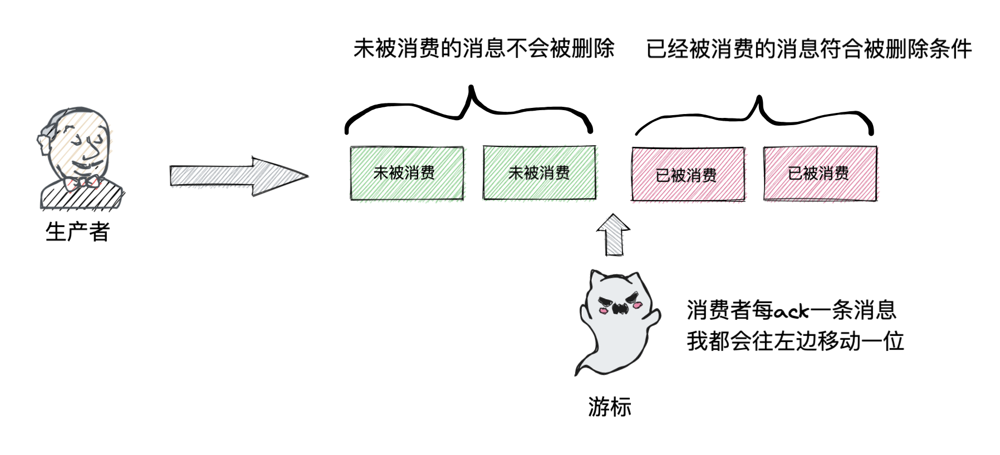
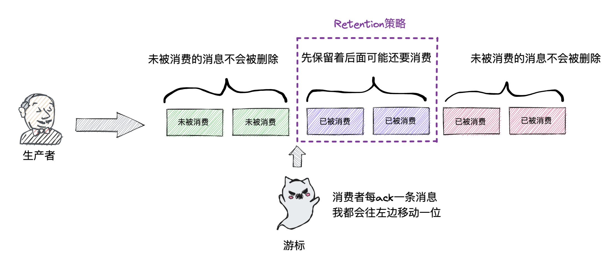
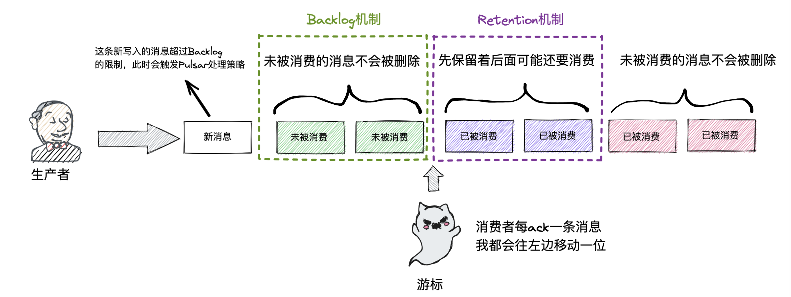
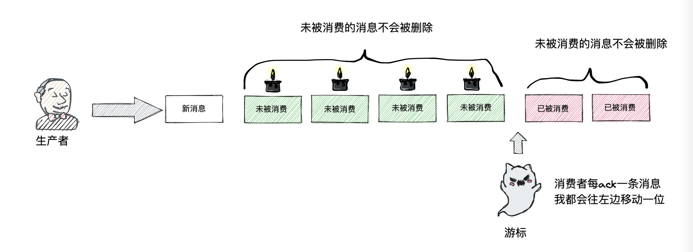
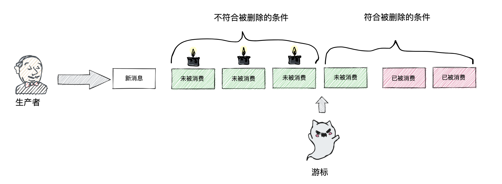

引言
任何东西都有生命周期，就像沙丁鱼罐头🥫也会过期一样，咱们的消息本身也是有生命周期的，因此像Pulsar这样的流平台/消息队列也提供了Retention、Backlog和TTL机制。
默认清理机制
任何机制的出现都是有背景的，因此我们要先了解这三个机制出现之前的情况，才能分析出它们具体分别解决的事什么问题。首先看下图，生产者往Broker不断往Broker中写入消息，这些消息在Broker中会按照顺序从左到右进行存储的，新写入的消息是不断的在左边进行新增。消费者也是从右往左进行消费的，在Broker中会维持一个游标记录消费的情况，通过此游标Broker才可以对消息进去区分，哪些消息是可清理回收的，哪些消息是目前还不能清理回收的。这个默认清理机制符合我们使用消息队列的一部分业务场景
Retention机制
在咱们理解了默认清理机制时，我们会有个疑问🤔️，如果消息一被成功消费就被删除，那么如果Broker的下游处理有问题需要从头消费或者从指定的某个位置消费的话，目前的清理机制是完成没办法支持的。而Pulsar设计的目标是一个大一统的流平台/消息队列，肯定是不允许这种情况的出现，因此引入了Retention机制。
通过下图可以看到消息发布订阅过程，在默认的清理机制中游标右侧的消息是允许被删除的，但是配置Retention的情况则会按照机制进行保存一段时间。而Cursor游标左边的这些消息表示还没被消费者消费，因此即便没有配置 Retention机制这些消息也不会被删除。Retention 支持数据大小维度以及时间维度两种方式进行配置，不过它目前仅支持针对Namespace级别进行生效。
在设置Retentio机制时可以通过defaultRetentionSizeInMB和defaultRetentionTimeInMinutes同时进行配置，此时会有以下几种情况
| 时间维度 | 文件大小为度 | 消息保留效果 |
|---|---|---|
| -1 | -1 | 永久保存 |
| -1 | >0 | 基于数据大小进行保留 |
| >0 | -1 | 基于时间进行保留 |
| 0 | 0 | 默认配置，当消息被消费后不会被保留 |
| 0 | >0 | 无效配置 |
| >0 | 0 | 无效配置 |
| >0 | >0 | 当消息已经被消费或者没有消费者订阅时，满足其中一个条件的则不被保留 |
Backlog 限额机制
Retention机制解决了消息“提前”删除的问题，那么可以高枕无忧了吗？让我们来想想下面这种场景，就是未被成功消费的消息是会一直保留在Pulsar中的，那么如果写入速度一直远大于消费速度，是不是就相当于一个蓄水池入水速度远大于出水速度，最终这个池子会满一样，Pulsar的磁盘也会被打满从而影响服务的稳定性。
Backlog的原理其实不复杂，相当于在蓄水池中标记一个水位线，当蓄水池的高度到达这条水位线时则触发报警，工作人员根据这个报警来做出相对应的处理。Pulsar其实也是一样，假如我们配置Backlog限额的大小是两条消息的大小，那么如下图，此时如果已经有两条消息未被消费，再有一条新的消息进行尝试写入，就会触发Pulsar的报警策略进行处理。
积压警报策略有以下三种
- producer_request_hold：生产者会暂时等待一段时间，并在之后重新进行消息发送
- producer_exception：向生产者抛出异常，让生产者进行处理如停止或暂停往Pulsar进行消息的写入
- consumer_backlog_eviction：Broker会清理一些积压的数据
Backlog 机制是针对Namespace级别限额，同样是支持通过数据大小以及时间两种维度配置。
Time to live (TTL)
看起来Retention和Backlog机制已经基本满足我们的使用了，那么为啥还要加一个TTL呢？是社区闲着没事干整那么多东西吗，答案显然不是的。我们再来想想生活中的某些场景，如果在我们的业务场景中消息是有时效性的，例如股票最新的价格，如果这个价格信息是通过Pulsar进行传递的，那么如果这条消息及时没有被消费，在10分钟后它的价值理论上就没有那么高了，因为还会有源源不断的最新价格信息写入Pulsar，而用户更加关心的是最新的价格。因此根据业务场景给消息配置上TTL，可以更有利于Pulsar进行消息的回收以及资源的释放。通过下图我们可以看到，每一条消息都有一个“蜡烛”标记它的生命周期
当这条消息上面的蜡烛燃尽时，即便这条消息还没有被消费，游标依然会移动到它左边将其标记为允许被删除，因为此时对于业务来说这条消息已经属于没有价值，没有在Pulsar继续保留的必要。可以看到这种方式相比Backlog的方式更加稳妥，因为这不依赖于消费者的消费情况
综合
- 对于Pulsar存储而言，Backlog和TTL机制可以防止磁盘被耗尽；而Retention机制会占用磁盘来保留未来可能还会用到的消息。
- 对于影响范围而言，Retention机制仅针对已经成功消费的消息，Backlog和TTL仅针对未被成功消费的消息。
- 整体流程就是，在过了Retention配置的时间，已被成功消费的消息就会被删除；如果Pulsar的消息超过了Backlog限额则Pulsar会停止接收来自生产者的消息直到有更多可用的空间，因此针对消息数据配置TTL是可以非常好的保护Backlog限额的。
- Pulsar物理存储的大小应该满足Retention和Backlog的总和，在设计集群时应该把消息需要保留多久、允许多少积压等考虑进去。
- 除此之外Pulsar支持分层存储，会将冷数据迁移到更加廉价的外部系统中存储，此时配置的策略会依然有效，因此应该考虑全面。
以上就是Pulsar Retention、Backlog和TTL机制的核心，可以满足流平台/消息队列的使用场景